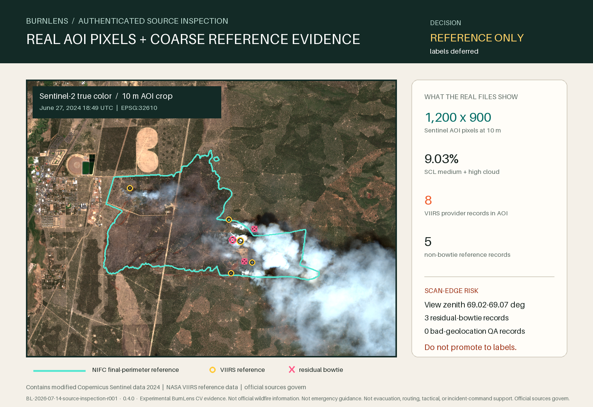

Experimental BurnLens CV evidence. Not official wildfire information. Not emergency guidance. Not evacuation, routing, tactical, or incident-command support. Official sources govern.

Decision
Accept the exact package for source and reference inspection. Do not promote it to labels or a dataset yet.
The Sentinel crop is readable and the VIIRS product contains AOI reference detections, but the VIIRS observations sit at the far scan edge with approximately 69° view zenith. Three of eight AOI records carry the residual-bowtie QA flag, and the 375 m thermal-anomaly evidence cannot be expanded into 10–20 m segmentation truth.
AOI VIIRS records
| Index | Confidence | Residual bowtie | View zenith | Inside NIFC reference |
|---|---|---|---|---|
| 54 | nominal | yes | 69.04° | yes |
| 55 | high | yes | 69.04° | yes |
| 56 | nominal | yes | 69.02° | no |
| 57 | nominal | no | 69.02° | yes |
| 58 | nominal | no | 69.04° | yes |
| 59 | high | no | 69.02° | yes |
| 60 | nominal | no | 69.02° | no |
| 61 | nominal | no | 69.07° | yes |
Traceability
Run: BL-2026-07-14-source-inspection-r001
Git source commit: 9a7e614fbfbbcd4c5a6795417121cafb82ae5dcc
Software: 0.4.0
App / dataset / labels / model: none
Package: darlene3-s2-viirs-pair-v0.1.0
Contract: paired-intake-contract-v0.4.0
Source and use notes
- Contains modified Copernicus Sentinel data 2024.
- NASA VIIRS data are coarse thermal-anomaly reference evidence; data imperfections, false alarms, and omissions remain possible.
- The NIFC final perimeter is incident-reference geometry, not a BurnLens detection or pixel-perfect label.
- Official sources govern over every BurnLens-derived artifact.